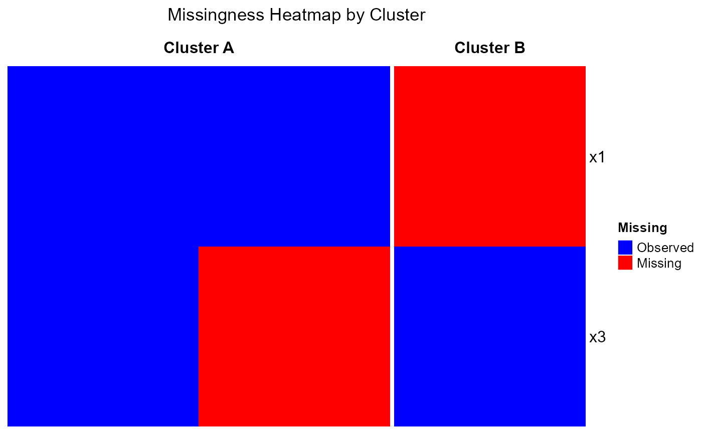

Visualize the pattern of missing values in a dataset, arranged by cluster. Each column in the heatmap represents one observation and each row a feature. Tiles indicate whether a value is missing (black) or present (white). Cluster labels are shown as a column annotation bar above the heatmap. The package ComplexHeatmap must be installed for this function to work.
Usage
cluster_heatmap(
data,
clusters,
cols_ignore = NULL,
show_row_names = TRUE,
missing_color = "black",
observed_color = "white",
title = "Missingness Heatmap by Cluster"
)Arguments
- data
A
data.frameor tibble containing the dataset with possible missing values. Rows represent observations and columns represent features.- clusters
A vector of cluster labels for each observation (row) in
data. Must have the same length asnrow(data).- cols_ignore
Optional character vector of column names in
datato exclude from the heatmap (e.g., identifiers or non-feature columns).- show_row_names
Logical. If TRUE, displays feature names on plot
- missing_color
Display color of missing values. Default black.
- observed_color
Display color of observed values. Default white.
- title
Optional plot title. Defaults to "Missingness Heatmap by Cluster"
Value
A list of class "ComplexHeatmap" containing the heatmap
object. This can be used for further inspection or manual redraw.
Details
This function constructs a binary missingness matrix where 1 indicates a missing value and 0 a present value. Columns (observations) are ordered by their cluster labels, and the function displays a heatmap of missingness patterns using ComplexHeatmap. Cluster membership is displayed as an annotation above the heatmap.
Examples
if(requireNamespace("ComplexHeatmap")){
# Simple example with small dataset
df <- data.frame(
x1 = c(1, NA, 3),
x2 = c(NA, 2, 3),
x3 = c(1, 2, NA)
)
cl <- c("A", "B", "A")
cluster_heatmap(df, cl)
# Example excluding a column prior to plotting
cluster_heatmap(df, cl, cols_ignore = "x2")
}
